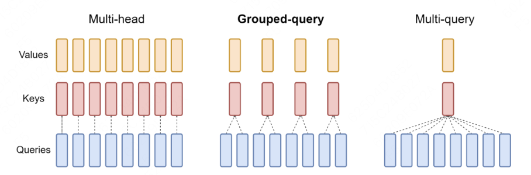
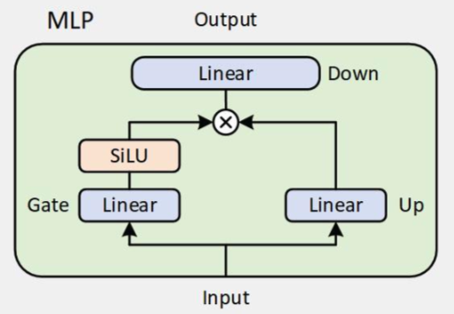

最近想要深入學習一些MLsys的開源框架，像Sglang, vLLM和Slime之類的，光閱讀code和文章記憶不深，想說自己來寫一下筆記。第一篇先以最簡單的huggingface transformers為主，順便複習一下以前沒注意到的東西。
平常都在用Transformers做事，但裡面的架構卻不是很熟悉，想用看code的方式，去解析一下不同開源LLM的實作細節，這邊以Qwen3和Qwen2為主，參雜一些個人理解和對其他模型的比較，不會到超級仔細，若是說錯了，歡迎指正。 這邊主要以huggingface的實作為主。
CausalLM
"Causal" 就是因果關係的意思，CausalLM就是泛指目前最常見從左到右的LLM，最新的token看得到過去的token，但過去的token看不到未來的token。 1
2
3
| class Qwen3ForCausalLM(Qwen3PreTrainedModel, GenerationMixin)
class LlamaForCausalLM(LlamaPreTrainedModel, GenerationMixin)
class DeepseekV3ForCausalLM(DeepseekV3PreTrainedModel, GenerationMixin)
|
1
2
3
4
5
6
7
8
9
10
11
12
13
14
15
16
17
18
19
20
21
22
23
24
25
26
27
28
29
30
31
32
33
34
35
36
37
38
| def forward(
self,
input_ids: torch.LongTensor | None = None,
attention_mask: torch.Tensor | None = None,
position_ids: torch.LongTensor | None = None,
past_key_values: Cache | None = None,
inputs_embeds: torch.FloatTensor | None = None,
labels: torch.LongTensor | None = None,
use_cache: bool | None = None,
cache_position: torch.LongTensor | None = None,
logits_to_keep: int | torch.Tensor = 0,
**kwargs: Unpack[TransformersKwargs],
) -> CausalLMOutputWithPast:
outputs: BaseModelOutputWithPast = self.model(
input_ids=input_ids,
attention_mask=attention_mask,
position_ids=position_ids,
past_key_values=past_key_values,
inputs_embeds=inputs_embeds,
use_cache=use_cache,
cache_position=cache_position,
**kwargs,
)
hidden_states = outputs.last_hidden_state
logits = self.lm_head(hidden_states)
loss = None
if labels is not None:
loss = self.loss_function(logits=logits, labels=labels, vocab_size=self.config.vocab_size, **kwargs)
return CausalLMOutputWithPast(
loss=loss,
logits=logits,
past_key_values=outputs.past_key_values,
hidden_states=outputs.hidden_states,
attentions=outputs.attentions,
)
|
Model
主要架構層，這裡會把input text從頭到尾生成last hidden state。
embed_tokens: Token embedding，從input_ids (1, 2, 3...) mapping 成hidden vector。
layers: config.num_hidden_layers定義了LLM需要幾層layers，layers越多model就越大。
norm: Qwen 2, 3 使用了 RMSnorm 取代傳統 layer norm，後面細講。
rotary_emb: Rotary Position Embedding. 這邊等到後面細講。
1
2
3
4
5
6
7
8
9
10
11
12
13
14
15
16
17
| class Qwen3Model(Qwen3PreTrainedModel):
def __init__(self, config: Qwen3Config):
super().__init__(config)
self.padding_idx = config.pad_token_id
self.vocab_size = config.vocab_size
self.embed_tokens = nn.Embedding(config.vocab_size, config.hidden_size, self.padding_idx)
self.layers = nn.ModuleList(
[Qwen3DecoderLayer(config, layer_idx) for layer_idx in range(config.num_hidden_layers)]
)
self.norm = Qwen3RMSNorm(config.hidden_size, eps=config.rms_norm_eps)
self.rotary_emb = Qwen3RotaryEmbedding(config=config)
self.gradient_checkpointing = False
self.has_sliding_layers = "sliding_attention" in self.config.layer_types
self.post_init()
|
1
2
3
4
5
6
7
8
9
10
11
12
13
14
15
16
17
18
19
20
21
22
23
24
25
26
27
28
29
30
31
32
33
34
35
36
37
38
39
40
41
42
43
44
45
46
47
48
49
50
51
52
53
54
55
56
57
58
59
60
61
62
63
64
65
| def forward(
self,
input_ids: torch.LongTensor | None = None,
attention_mask: torch.Tensor | None = None,
position_ids: torch.LongTensor | None = None,
past_key_values: Cache | None = None,
inputs_embeds: torch.FloatTensor | None = None,
use_cache: bool | None = None,
cache_position: torch.LongTensor | None = None,
**kwargs: Unpack[TransformersKwargs],
) -> BaseModelOutputWithPast
if inputs_embeds is None:
inputs_embeds = self.embed_tokens(input_ids)
if use_cache and past_key_values is None:
past_key_values = DynamicCache(config=self.config)
if cache_position is None:
past_seen_tokens = past_key_values.get_seq_length() if past_key_values is not None else 0
cache_position = torch.arange(
past_seen_tokens, past_seen_tokens + inputs_embeds.shape[1], device=inputs_embeds.device
)
if position_ids is None:
position_ids = cache_position.unsqueeze(0)
causal_mask = create_causal_mask(
config=self.config,
input_embeds=inputs_embeds,
attention_mask=attention_mask,
cache_position=cache_position,
past_key_values=past_key_values,
position_ids=position_ids,
)
hidden_states = inputs_embeds
position_embeddings = self.rotary_emb(hidden_states, position_ids)
for decoder_layer in self.layers[: self.config.num_hidden_layers]:
hidden_states = decoder_layer(
hidden_states,
attention_mask=causal_mask_mapping[decoder_layer.attention_type],
position_embeddings=position_embeddings,
position_ids=position_ids,
past_key_values=past_key_values,
use_cache=use_cache,
cache_position=cache_position,
**kwargs,
)
hidden_states = self.norm(hidden_states)
return BaseModelOutputWithPast(
last_hidden_state=hidden_states,
past_key_values=past_key_values if use_cache else None,
)
|
Decoder layers
這邊會分開來講 [layer norm -> attention -> mlp]。
Attention
這邊就不細講 Attention 怎麼算的，之後看 FlashInfer 再一起看 Flash Attn 等計算和代碼。
看一些一般不會注意到的實作細節。 Code:
1
2
3
4
5
6
7
8
9
10
11
12
13
14
15
16
17
18
19
20
21
22
23
24
25
26
27
28
29
30
31
32
33
34
| class Qwen3Attention(nn.Module):
def __init__(self, config: Qwen3Config, layer_idx: int):
super().__init__()
self.config = config
self.layer_idx = layer_idx
self.head_dim = getattr(config, "head_dim", config.hidden_size // config.num_attention_heads)
self.num_key_value_groups = config.num_attention_heads // config.num_key_value_heads
self.scaling = self.head_dim**-0.5
self.attention_dropout = config.attention_dropout
self.is_causal = True
self.q_proj = nn.Linear(
config.hidden_size,
config.num_attention_heads * self.head_dim,
bias=config.attention_bias
)
self.k_proj = nn.Linear(
config.hidden_size,
config.num_key_value_heads * self.head_dim,
bias=config.attention_bias
)
self.v_proj = nn.Linear(
config.hidden_size,
config.num_key_value_heads * self.head_dim,
bias=config.attention_bias
)
self.o_proj = nn.Linear(
config.num_attention_heads * self.head_dim,
config.hidden_size,
bias=config.attention_bias
)
self.q_norm = Qwen3RMSNorm(self.head_dim, eps=config.rms_norm_eps)
self.k_norm = Qwen3RMSNorm(self.head_dim, eps=config.rms_norm_eps)
self.sliding_window = config.sliding_window if self.layer_type == "sliding_attention" else None
|
- 注意Qwen3的attention bias是可以被關閉的，而Qwen2是強制開啟。
- Attn(Q,K,V)=softmax(QK/sqrt(d)+bias)V
- bias會讓llm有更強的instruction following，能夠更服從prompt，相對的關掉bias可以讓llm有更多exploration，這對reasoning model特別有用，因為CoT需要更廣的探索去獲取reasoning pattern。
- QK norm是Qwen3新加的，在Qwen2和llama等模型都沒有。
- 原本attention score: \(s_{ij}=\frac{q_{i}⊤k_{j}}{\sqrt{d}}\).
- 在沒有bias的之後，模型更新會直接由QK決定，若是訓練過於朝向某個token，QK值會變得很大，在這裏的RMSnorm是為了訓練穩定。
- 除了防止訓練爆掉，還有一個是為了不讓RL訓練overfit到某些token，在RL訓練中，某些token可能導致獲得高reward，這屬於某種reward hacking，這邊的normalize是為了RL訓練的穩定。
- 為什麼只對QK做norm? 注意這邊只對head dim做norm，意思就是說為了不消除不同head之間的訊息量，所以才只對head內做norm，若是V也做同樣的事，則會失去不同head之間的語意訊息。
- Group Query Attention / Multi-head Attention 
- 在Attention裡每個head代表學習不同的語意和邏輯，就是不同的sub-space，當然也可以被共享。
- 就像上圖一樣，最naive的MHA每個QKV都是獨立的，也消耗最多的算力（更多的KV weight和KV Cache存取）。
- MQA是另一極端，所有V享有一個head，最有效率的同時也犧牲表現力，只在一些專門解small task的模型中使用。
- GQA是兼顧效率和表現，享有較少算力的同時兼顧表現，現代模型大多使用這種架構。
Rotary Positional Embedding (RoPE)
比較一下Absolute PE和Relative PE
- Absolute: x_t → x_t + pos_embedding[t]
- Relative: QK^T + bias(i - j)
RoPE概念是利用旋轉角度給予位置資訊，RoPE 對每個 position t，把 QK 在 2D 子空間裡旋轉一個角度θt。賦予相對位置資訊的同時，也不用另外學習。當然，當 context length 拉得超級長的時候，短距離位置之間的資訊量會被壓平，這時候會用 yarn 之類的變體來處理（Deepseek）。 1
2
3
4
5
6
7
8
9
10
11
12
13
14
15
16
17
18
| class Qwen3RotaryEmbedding(nn.Module):
inv_freq: torch.Tensor
def __init__(self, config: Qwen3Config, device=None):
super().__init__()
self.max_seq_len_cached = config.max_position_embeddings
self.original_max_seq_len = config.max_position_embeddings
self.config = config
self.rope_type = self.config.rope_parameters["rope_type"]
rope_init_fn: Callable = self.compute_default_rope_parameters
if self.rope_type != "default":
rope_init_fn = ROPE_INIT_FUNCTIONS[self.rope_type]
inv_freq, self.attention_scaling = rope_init_fn(self.config, device)
self.register_buffer("inv_freq", inv_freq, persistent=False)
self.register_buffer("original_inv_freq", inv_freq.clone(), persistent=False)
|
計算 inv_freq （簡化）：對於第i個位置，分配一個角度。 1
2
3
4
5
6
| def compute_default_rope_parameters(config, device, seq_len=None):
base = config.rope_parameters["rope_theta"]
dim = config.head_dim
inv_freq = 1.0 / (
base ** (torch.arange(0, dim, 2) / dim)
)
|
Forward function: (簡化) 1
2
3
4
5
6
| def forward(self, x, position_ids):
freqs = (inv_freq @ position_ids).transpose(1, 2)
emb = torch.cat((freqs, freqs), dim=-1)
cos = emb.cos()
sin = emb.sin()
return cos.to(dtype=x.dtype), sin.to(dtype=x.dtype)
|
MLP
每個layer後面都會接一個MLP，之前一直不知道為什麼後面接一個這個，稍微研究一下才知道是為了引入「非線性」。 就像linear layer後面會有ReLU一樣，Decoder block最後也會有MLP。  Qwen2,3都採用Gated MLP。 1
2
3
4
5
6
7
8
9
10
11
12
13
14
| class Qwen3MLP(nn.Module):
def __init__(self, config):
super().__init__()
self.config = config
self.hidden_size = config.hidden_size
self.intermediate_size = config.intermediate_size
self.gate_proj = nn.Linear(self.hidden_size, self.intermediate_size, bias=False)
self.up_proj = nn.Linear(self.hidden_size, self.intermediate_size, bias=False)
self.down_proj = nn.Linear(self.intermediate_size, self.hidden_size, bias=False)
self.act_fn = ACT2FN[config.hidden_act]
def forward(self, x):
down_proj = self.down_proj(self.act_fn(self.gate_proj(x)) * self.up_proj(x))
return down_proj
|
- 注意到
intermediate_size = 4*hidden_size
- 查資料才知道MLP是模型容量的主要來源
我原本一直以為把decoder層數scale up就會有容量 我錯了
- Gated MLP
- 選擇性開關資訊流的MLP
- Gated MLP = token-level、連續版的 MoE
RMSNorm
最後來談談 RMSNorm。 跟一般 layer norm 的主要不同就是只對 vector 長度正規化，不會對方向正規劃。換句話說不會引入其他 bias。
- Layer Norm: [x-mean(x)]/std(x)
- RMS Norm: x / ||x||
1
2
3
4
5
6
7
8
9
10
11
12
| class Qwen3RMSNorm(nn.Module):
def __init__(self, hidden_size, eps: float = 1e-6) -> None:
super().__init__()
self.weight = nn.Parameter(torch.ones(hidden_size))
self.variance_epsilon = eps
def forward(self, hidden_states: torch.Tensor) -> torch.Tensor:
input_dtype = hidden_states.dtype
hidden_states = hidden_states.to(torch.float32)
variance = hidden_states.pow(2).mean(-1, keepdim=True)
hidden_states = hidden_states * torch.rsqrt(variance + self.variance_epsilon)
return self.weight * hidden_states.to(input_dtype)
|
Conlusion
原本想寫一下 MOE 的，但還是等下一篇好了，之後也會談談Flash Infer等 inference kernel，最後會去看 Sglang vLLM。可能也會看看 LoRA 等一些 MLsys 技巧。